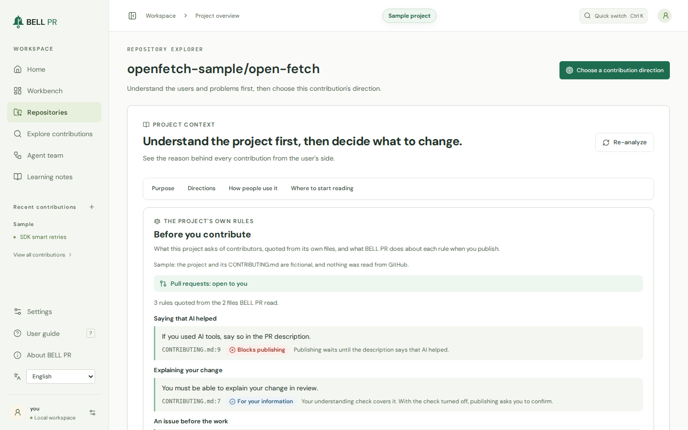
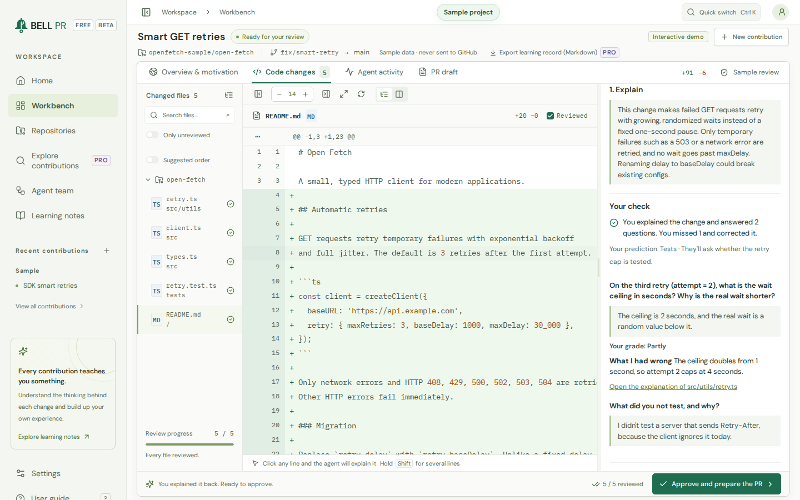
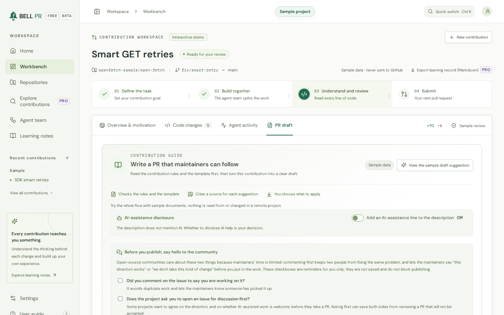

Open-source contributions in the vibe coding era
Understand every change Contribute with care
Discuss, design, and build with AI while sharpening your engineering judgment. Understand what you send, and stand behind it.
On your machine. Free and open source. No telemetry.

Get started
Your next contribution starts here
Use the tools you know. Run one command in your terminal.
Free and open source. No BELL PR account. Real contributions need Git, a signed-in GitHub CLI, and Codex CLI or Claude Code.
Demo
Watch the 90-second demo
See the flow from reading the project's rules to a Draft PR you understand.
How it works
Put understanding before the pull request
Vibe coding makes code easier to produce. Understanding and review still take time. BELL PR helps you work through the design, verify the result, and explain the trade-offs before submitting, so maintainers do not have to untangle changes you cannot explain.
-
Understand the project first
BELL PR quotes the project's own contribution rules, checks that it takes pull requests from you, and shows whether the issue you pick is still open and who else is on it.
-
Discuss the plan, then build
Work through the plan and trade-offs with the Lead, then approve it. Teammates, a Reviewer and a Test analyst work in isolated git worktrees, using your chosen AI coding CLI.
-
Explain the change, own the decision
Compare approaches and answer each file's question before seeing the explanation. Then explain the whole change in your own words before you approve it.
-
Share a draft, learn from the review
Publish a Draft PR in your own words once the project's checks pass, then compare the maintainers' review with what you predicted and practise what you missed.
A closer look
What you work with
Screens from the sample project that comes with BELL PR. Select one to see it at full size.
-

Read the rules firstBefore you choose a contribution direction, BELL PR quotes the project's own rules with their file and line, says what publishing does about each, and checks that pull requests are open to you. -
Every change, explainedRead each changed file next to a plain-language explanation with examples, answer its question before the answer shows, and ask about any line. -

Explain it back before you approveA short closed-book check next to the diff: your explanation, your answers and your own grades. No AI model grades you. -

A pull request that fits the projectYou edit the title and description with what is left to do beside them. Further down, the maintainer checklist checks the change against the project's rules, the issue and your pace there. AI help is mentioned only if the project requires it or you choose to.


Build engineering taste, one change at a time
Question the design, compare the trade-offs, and learn from review. Practice choosing what fits the project and explaining why.
Make every contribution a lesson.Understand the change. Test yourself. Practice what you missed.
-
Explanations you test yourself on
Every changed file comes with what changed and why, an example, trade-offs and another way to do it. You answer its question before the answer shows, and you choose which approach you would take.
-
Explain it back before you approve
Ship only what you can explain: a short closed-book check of your own summary and answers, which you grade yourself. It is on by default; turning it off is visible on every run.
-
Practice what you missed
Answers you got wrong while you were sure, and maintainer comments that surprised you, come back days later in your practice deck. No streaks, no scores.
-
A coach that reads your records
A coach debrief reads your records for one project, names what its maintainers raise most and builds practice drills from your own contributions. Export a contribution's complete learning record as Markdown.
A good guest in every project.From contribution rules to review feedback, keep the project in view.
-
The project's rules, quoted
Rules on AI use, disclosure and descriptions in your own words are quoted from the project's own files, with the file and line, and checked again when you publish.
-
Still open, still yours
Before you start and again before you publish, BELL PR checks that the issue is open and looks for anyone else assigned to it, claiming it or with a pull request linked to it.
-
Close the loop before the next PR
Publishing is paced in each project: answer the review on your open pull requests before you open more there.
-
Follow up on the review
Read the maintainers' feedback and compare it with your forecast. Then let an agent address selected comments in a follow-up round, after you restate each one in your own words; you review the round and push it as one more commit.
Your tools. Working together.Find a direction, build with a team, and choose how it works.
-
Directions with evidence
An agent reads the project and suggests contribution directions, each quoting the code or documents it rests on, and BELL PR checks that every quote really exists. Ask for five more whenever you want, up to 30 per project.
-
Find your next contribution
Discovery searches GitHub for projects and issues that match your interests, language and the difficulty you want, reads their contribution rules, and explains the effort and the first step.
-
A team that fits the change
A Lead, two, three or four teammates, a Reviewer and a Test analyst, each teammate in its own git worktree. Work on several contributions at once, up to the limit you set (2 by default, at most 8).
-
Your tools, your effort
Choose the Codex CLI or Claude Code, the model, the reasoning effort (including the deepest levels) and an efficiency mode. Web access for agents stays off until you turn it on.
Open source
Free, Apache-2.0 licensed, community-maintained
BELL PR is open-source software. It has no fee, no account and no BELL PR server, and it is built and maintained by its community.
-
Free to use
Nothing to buy or sign up for. The AI coding CLI you connect is billed by its provider to your own account, and usage counts against it.
-
Apache License 2.0
Use it, study it, change it and share it under the Apache License 2.0. It is provided as is, without warranty of any kind.
-
Community-maintained
Report issues, suggest changes and send pull requests. The project asks of you what BELL PR asks of its users: small changes you understand and can explain.
-
The name and logo
BELL PR is a trademark of the project. The Apache License covers the code, not the name or the logo; the trademark policy in the source repository,
TRADEMARKS.md, says what you may do with them.
Privacy and trust
Your machine, your accounts, your decision
-
Local-first
BELL PR runs on your computer and listens on 127.0.0.1 by default. Repositories, runs and notes stay in its data directory, and you can delete them from the app.
-
No BELL cloud
There is no BELL PR server and no account. BELL PR works with the OpenAI Codex CLI or the Claude Code CLI you installed and signed in to, and with the GitHub CLI: your code goes only where they send it, and usage counts against your own account.
-
No telemetry
No analytics, usage data or crash reports, in the app or on this site. The app loads nothing from other sites.
-
Open source
The code is licensed under the Apache License 2.0 and open to read, so you can check what BELL PR does and what leaves your computer.
Questions
What do I need to run BELL PR?
macOS, Linux, or Windows through WSL2; Node.js 22 or later (or Docker); Git; the GitHub CLI, signed in; and one AI coding CLI, installed and signed in: the OpenAI Codex CLI or Claude Code. The install guide has the details.
Whose AI account does it use?
Yours. BELL PR runs the AI coding CLI you installed and signed in to: the Codex CLI, or the Claude Code CLI with your Claude plan or Anthropic API key. Usage counts against your own account.
Does it open pull requests on its own?
No. BELL PR publishes a Draft PR only after you have reviewed every changed file, explained the change back (unless you turned that check off) and approved the draft. Before it publishes, it checks again that the project takes pull requests from you and that the issue is still yours.
Does my code go to BELL PR?
No. There is no BELL PR cloud. Your code goes to the AI provider behind the coding CLI you chose and to GitHub, under your own accounts and the conditions of each service.
What does it cost?
Nothing. BELL PR is free and open source under the Apache License 2.0, with no account. You pay only the provider of the AI coding CLI you chose, for your own usage.
Is BELL PR open source?
Yes. It is licensed under the Apache License 2.0 and maintained by its community, and it is provided as is, without warranty. The license covers the code; the BELL PR name and logo are trademarks of the project, and TRADEMARKS.md in the source repository says what you may do with them. Contributions are welcome: CONTRIBUTING.md says how.
Does the pull request say that AI helped?
Only if you choose, or if the project requires it. The draft can end with an editable line saying that AI coding agents helped prepare the change and that you reviewed it. The line is off unless you turn it on, or the project's own rules ask for a disclosure. When they require one, BELL PR does not publish until the description has it. Follow each project's rules on AI-assisted contributions; docs/contributing-responsibly.md in the source repository explains what responsible use means.
Can I turn the understanding check off?
Yes, in Settings → Learning, after a confirmation that says what changes. Every file still has to be reviewed and you still approve the pull request; every project-rule, issue and pacing check still applies, and runs approved without the check are marked for good.
Is BELL PR made by GitHub, OpenAI or Anthropic?
No. BELL PR is an independent product. It works with tools from those companies that you install and sign in to yourself.
Grow your judgment. Respect maintainers' time.